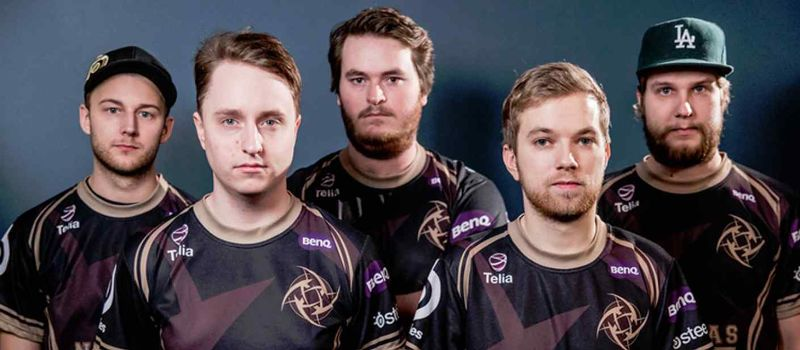

2012/13 The NIP Era
August 2012
Valve had just released the successor to Counter-Strike: Source, the new game had been titled Counter-Strike Global Offensive. The professional scene at this point was running tournaments for two separate games with their two separate player bases concurrently - Counter-Strike 1.6 and Counter-Strike Source. The 1.6 players didn’t want to move to a new game when Source was released and now the same story was repeating itself with the launch of CSGO. Most pro players had classified the new game as an unbalanced mess that would never succeed.
 Nevertheless, tournaments started within a week of the game’s launch and a newly revived organization came into this game firing on all cylinders. Without missing a beat the Swedish roster had started dominating the game from the very first tournament. That team was the Ninjas In Pyjamas.
Nevertheless, tournaments started within a week of the game’s launch and a newly revived organization came into this game firing on all cylinders. Without missing a beat the Swedish roster had started dominating the game from the very first tournament. That team was the Ninjas In Pyjamas.
Sweden had a long history of producing the best counter strike teams in the world and the Ninjas In Pyjamas were not a new organization but had been defunct for many years leading up to the launch of CSGO. With the launch of the new game, however, the organization signed 3 CS 1.6 players(GeT_RiGhT,f0rest, and Xizt) and 2 CS: Source players(friberg and Fifflaren).As with most Swedish teams their biggest strength was communication.Swedish teams have a tendency to work as a hive mind without actually having to speak about a decision.It also helped that the team had the best riflers.
 Virtus.pro finally defeated NIP
This roster started off strong with wins at Steelseries GO and Dreamhack Valencia where they did not drop a single map to an opponent. This was only a sign of what was to come. The roster was dominating teams with a consistency that had never been seen before. The only team that could even score a few rounds against them was the french lineup of VeryGames.
But even they could not take a map off of the Ninjas.
Virtus.pro finally defeated NIP
This roster started off strong with wins at Steelseries GO and Dreamhack Valencia where they did not drop a single map to an opponent. This was only a sign of what was to come. The roster was dominating teams with a consistency that had never been seen before. The only team that could even score a few rounds against them was the french lineup of VeryGames.
But even they could not take a map off of the Ninjas.
Ninjas In Pyjamas continued their offline winning streak for till march of 2013 where they were finally defeated by the CIS roster Virtus.pro.While this ended the streak at 87-0 maps in a row the Ninjas bounced back but their results were mixed with a slew of losses.
Majors in Counter-Strike are Valve sponsored events and are regarded as the most prestigious tournaments in the world. The first major for CSGO was DreamHack Winter 2013. Coming into the major the french team VeryGames was the favourite to win the event followed by the CIS powerhouse Astana Dragons, both of whom had been beating NIP consistentely.Nevertheless, NIP were still amongst the top 3 to win the event, and right off the bat, they were showing promising results. They finished the group stage without losing a single match and went into the playoffs looking strong. Also in the playoffs was a young Swedish team called Fnatic(the org that had previously been home to GeT_RiGht and f0rest).Just like NIP they had finished the group stage undefeated. The Ninjas were still considered the favorites going into the finals against a red hot Fnatic.
 Fnatic won the major defeating NIP in the finals
The final was a full three map affair. The first map, Dust II, went the entire 30 rounds and resulted in a 16-14 victory for Fnatic however the Ninjas looked poised to take control over the series as they won the second map, Inferno,16-6 and as the decider was going to be Train which was a home map for the Ninjas. But Fnatic stomped NIP in the last map ending in a 16-2 scoreline, winning the first major in an amazing underdog run. And NIP lost the major they were the favorites to win which is a trend we will see repeating itself again as we talk about future majors.
Fnatic won the major defeating NIP in the finals
The final was a full three map affair. The first map, Dust II, went the entire 30 rounds and resulted in a 16-14 victory for Fnatic however the Ninjas looked poised to take control over the series as they won the second map, Inferno,16-6 and as the decider was going to be Train which was a home map for the Ninjas. But Fnatic stomped NIP in the last map ending in a 16-2 scoreline, winning the first major in an amazing underdog run. And NIP lost the major they were the favorites to win which is a trend we will see repeating itself again as we talk about future majors.
After the major, NIP was no longer the dominant force they had once been as they lost the following major at EMS One Katowice to Virtus.pro in the finals. Their shaky form continued as they only won one high-level LAN tournament in the 9 months after the DreamHack Major. Eventually, they won the third major at ESL One Cologne 2014 but the team has been struggling to find form ever since. As for Fnatic, they have continued to be a top-level contender for championships throughout the life of CSGO and we’ll be discussing their period of dominance soon.
2012-13 were the formative years for CSGO and were marked by the most dominant streak in the history of Counter-Strike that will probably never be broken. While NIP may not be a top dog anymore their influence and dominance in the early days of CSGO showed that a strong team could win in this new game and attracted other 1.6 teams into CSGO.